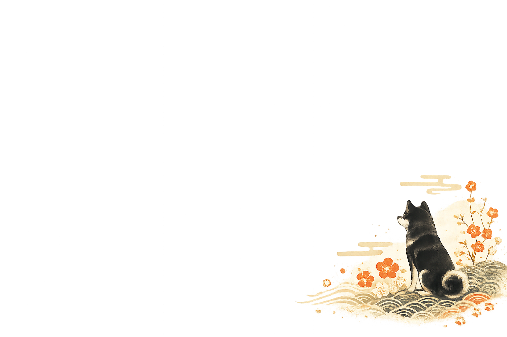
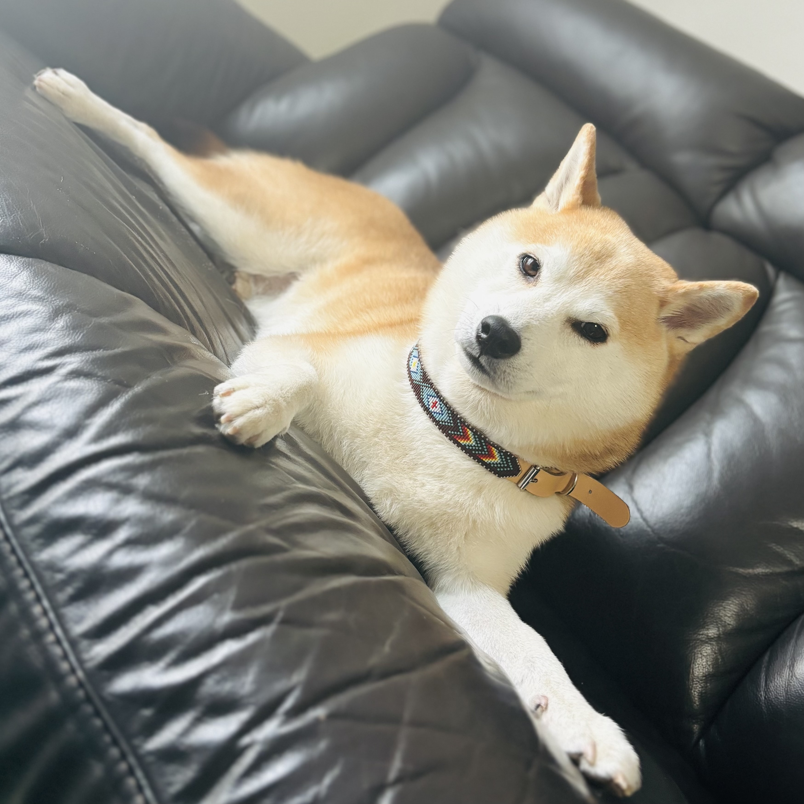
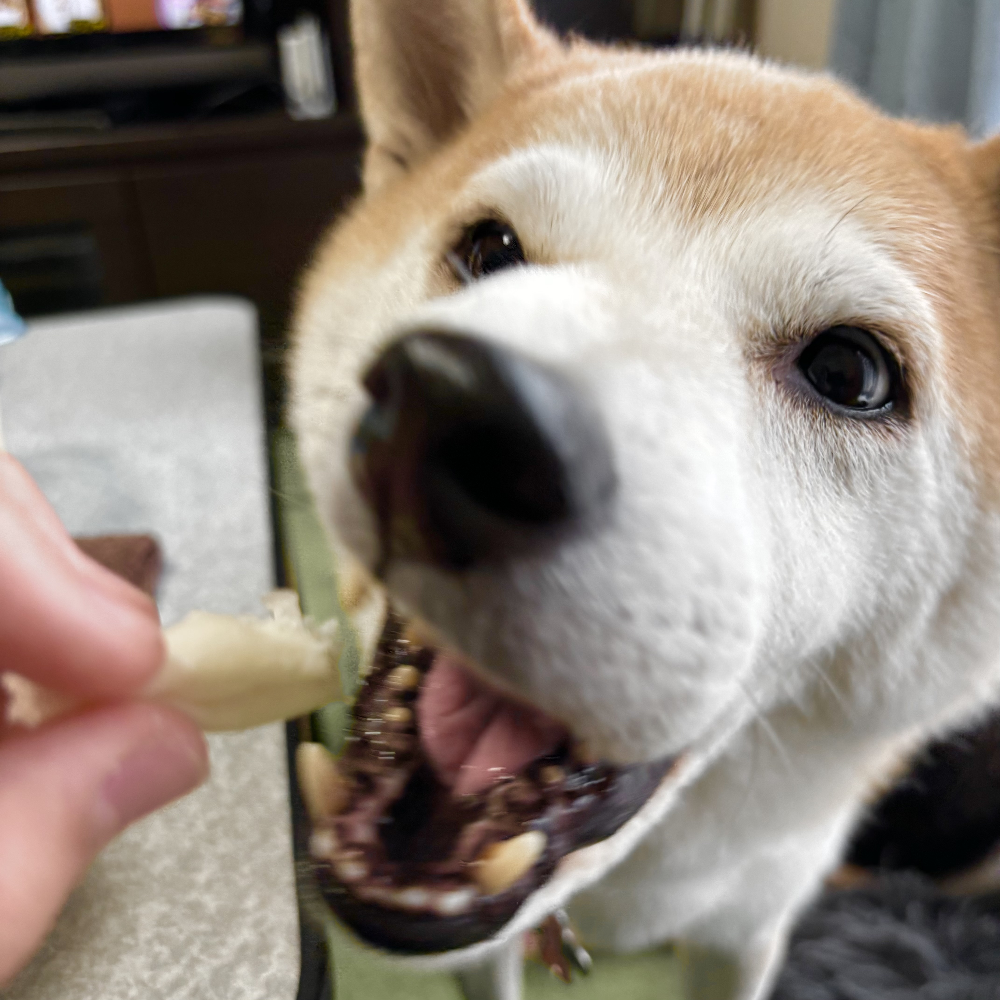
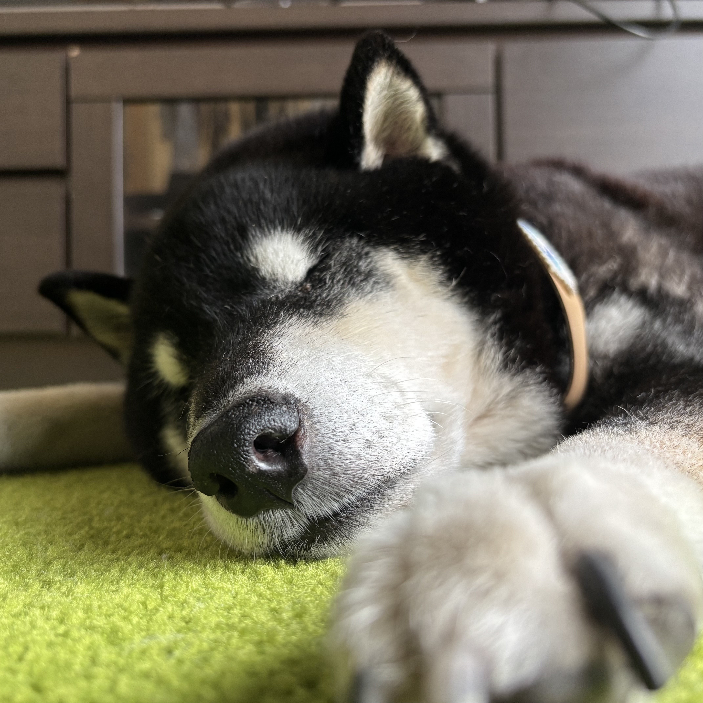

柴犬日和
〜 教科書には載っていない、柴犬のホンネ 〜
目次

柴犬はキリッとした顔立ちに耳がピンと立っている顔が特徴的で、賢い犬種です。
実は、その顔はきつね顔とたぬき顔に分けられて、毛にもある特徴があります。
さらに、日本犬の中で唯一小型犬と言われていますが、実際は中型犬並みに育つ子もいて柴犬は本当に小型犬なのか曖昧なラインなのです。
犬を飼うには柴犬に限らずしつけと環境が大切です。
主に「マテ」「お座り」「ハウス」「トイレ」この4つは覚えさせた方がいいです。逆を言えばしつけはこの4つ以上も以下も要らないです。
環境は過ごしやすい物や便利道具も大切ですが、飼う人の「注意」の方が大切です。


柴犬との生活は、大切な話もありますが面白い話ばかりです。
本来飼い主の方が立場が上のはずが、一緒に過ごしていると柴犬の方が上になる場面もなぜかあり、気づけば人間と柴犬が同等の立場のように過ごすようになることが多いです。
なぜそこまで面白いのか、ぜひもっと知ってください↓